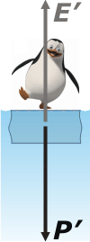

NO ME SALEN
EJERCICIOS RESUELTOS DE FÍSICA DEL CBC
FLUIDOS - PRINCIPIO DE ARQUÍMEDES |
|

|
| |
Adicional NMS 34*) Un bloque de hielo flota en el mar. Al pararse un pingüino de masa 20 kg lo hunde de manera que el agua llega exactamente hasta el nivel superior del bloque. (Dato: densidad del hielo: 9 /10 kg/litro). ¿Cuál es la masa del bloque? |
|
Este ejercicio no es más fácil ni más difícil que cualquier otro de hidrostática. Lo elegí para integrar mi colección de resueltos porque posee dos cualidades interesantes: un enunciado conciso al que le parecieran faltar datos, y la presencia de el pingüino, que además de ser un ave muy simpática es casi un símbolo argentino.
Tenemos una primera instancia en la que el pingüino no está. En esas condiciones el bloque de hielo flota dejando arriba del agua una décima parte. Eso lo sabe todo el mundo, pero si lo dudás, apliquemos el principio de Arquímedes: el peso, P, de un cuerpo (o lo que es lo mismo, su densidad por la gravedad por su volumen) que está flotando, es igual al empuje, E, que a su vez es igual al peso del líquido desalojado (o lo que es lo mismo, su densidad -del líquido- por la gravedad por el volumen desalojado).
P = E
δhielo . g . V = δlíq . g . Vsum
Cancelemos g y despejemos el volumen de agua desalojada, Vsum.
Vsum = ( δhielo /δlíq ) V
Vsum = 0,9 V
|
|
|
 |
O sea, que cuando un bloque de hielo flota en el agua deja sumergida nueve décimas partes, y emergida sobre el nivel del agua apenas una décima parte. Eso lo sabe todo el mundo (ya lo dije) y el ejercicio bien podrías empezar a resolverlo desde acá: el peso del bloque de hielo es igual a su empuje, o sea, igual al peso del agua líquida desalojada.
Sabido esto, reescribamos el principio de Arquímedes:
m . g = δlíq . g . 0,9 V
m = δlíq 0,9 V [1]
Donde m es la masa del bloque de hielo, δlíq es la densidad del agua líquida y V es el volumen total del bloque de hielo (nueve décimos es la parte sumergida, o sea, la que desplaza agua líquida). |
|
|
|
Ahora llega nadando el pingüino y se sube al bloque de hielo, que se hunde un poquito más, o sea, se hunde del todo y al pingüino se le mojan las patas. En realidad ya las tenía mojadas. |
|
|
|  |
En esta nueva situación, Arquímedes dice:
P' = E'
m + 20 kg = δlíq V [2]
Porque este nuevo empuje (que es mayor al anterior, ya que es igual al peso del conjunto bloque pingüino) se logra desplazando un volumen igual al del bloque de hielo entero, V.
Y listo... el resto es un poquito de álgebra. Restemos miembro a miembro las dos ecuaciones ([2] — [1]).
m + 20 kg — m = δlíq V — δlíq 0,9 V
20 kg = δlíq 0,1 V
De donde el volumen del bloque valdrá: |
|
|
|
V = 20 kg / 0,1 δlíq
V = 20 kg / 0,1 . 1 kg/lit
V = 200 lit
Con ese dato vuelvo a la ecuación [1] y calculo la masa del bloque de hielo.
m = δlíq 0,9 V
m = 1 kg/lit . 0,9 . 200 lit
|
|
|
|
|
|
O también, teniendo la densidad del hielo...
m = δhielo Vhielo = 0,9 kg/lit . 200 lit = 180 kg
Un modo más directo de resolver la parte algebraica era despejar el volumen de la ecuación [1] y lo que nos daba lo metíamos en la [2], para calcular la masa buscada. |
|
|
| *Este ejercicio formó parte del examen libre de Física tomado en dic-2013. Para ver el tema completo pordés hacer click acá. |
|
|
|
| DESAFÍO: ¿En serio que el pingüino es un ave? ¿O será un pescado? ¿O un cetáceo? |
|
 |
| Algunos derechos reservados.
Se permite su reproducción citando la fuente legítima, o sea, este sitio. Última actualización
dic-13. Buenos Aires, Argentina. |
|
|
| | |
|
|